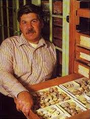
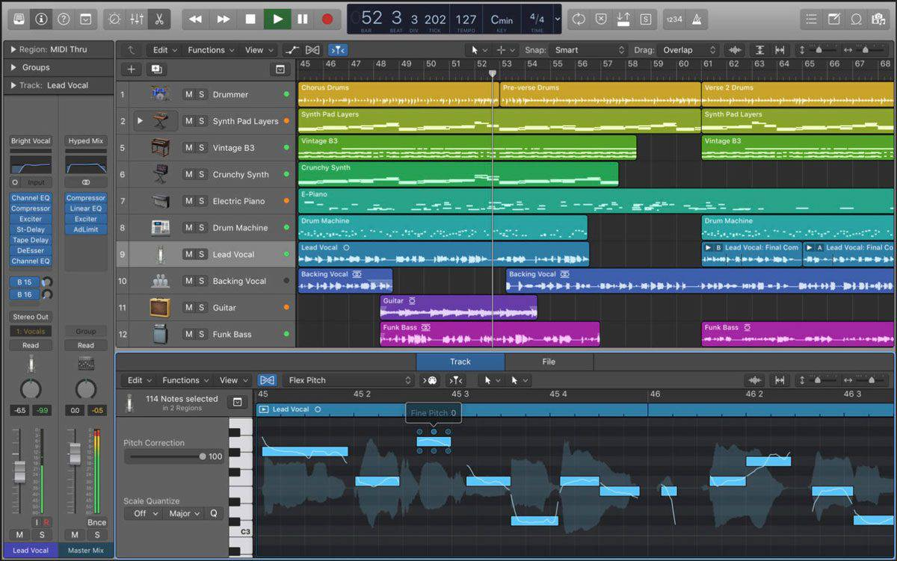

The Orchestra as Auditory Scene:
String Scoring and Perceptual Grouping
UWM Peck School of the Arts — Milwaukee, WI — March 31, 2026
String Family — Range
The orchestral strings span over 7 octaves — comprising the full orchestral range.
- Violin: lowest string G3 (G below middle C); upper register extends well above E7.
- Viola: lowest string C3; its typical writing reaches into the high E6–G6 range.
- Cello: lowest string C2; upper register overlaps with violin’s middle register.
- Double bass: lowest string E1 (or, down to C1 with a low C foot); upper register reaches into the 5th octave.

Violin range, by string (Blatter, 49)

Viola range, by string (Blatter, 56)

Cello range, by string (Blatter, 61)

Bass range, by string (Blatter, 67)
Registers + Timbres
- The strings also feature extensive overlap in range between family members.
- Overlap supports effective doubling and enables seamless handoffs of melodic lines across registers.
- Timbres of string sounds are also unified across registers and across instruments:
- i.e., the same pitch/octave, at the same dynamic & bowing will sound perceptually close whether played by a violin, viola, cello, or double bass.

Overlap in range of each string, on each instrument (source: Virtual Orchestration).
Dynamic Curves
- Some orchestral families project louder or softer in different registers (e.g., the oboe becomes quieter and “thinner” as pitch climbs.)
- The winds + brasses don’t achieve this unity of dynamic levels quite as easily.

Oboe dyanmic curve: loudness decreases across register (Blatter, 100).
Why This Matters
Because of their large range, overlap, and dynamic continuity,
strings can form unified masses or distinct layers.
Strings easily blend with themselves and with others,
but they can also form clearly separate orchestral planes.
A group of strings may fuse into a single sonority,
or divide into separate musical components.
Why This Matters
In other words, strings support both
perceptual integration and stratification.
Because string timbres are so closely related,
composers can move fluidly between perceptual states.
Perception?
What do we mean by perceptual states,
and why are they essential to string scoring practices?
Auditory Streams
Cognitive psychology describes how the brain perceives sound:
We organize sound into concurrent perceptual streams of activity.
Streams are like counterpoint: By listening,
we discern how many melodic voices we’re hearing,
and which notes belong to which voices.
Sonic events may be heard as one coherent audio source,
or as separate, simultaneous layers.
Stratification
Stratification occurs when sounds belong to different sources.
In the orchestra, differences in register, timbre, rhythm, or articulation
may cause us to separate sounds into distinct perceptual streams.
We then hear and sense simultaneous layers,
often corresponding to foreground, middleground, and background.
We can intentionally orchestrate stratification to build
clarity, contrast, and structural hierarchy.
Integration
Integration occurs when our brains group multiple sounds together
and hear them as belonging to the same source.
In the orchestra, similar pitch range, timbre, articulation,
and rhythmic timing encourage sounds to fuse together.
Instead of hearing separate instruments,
the listener perceives a single composite sonority.
We can integrate for blend, mass, and timbral cohesion.
Excerpts

Today’s scores can be found at this QR code →
(also accessible by clicking on the QR code.)
https://einbahnstrasse.github.io/string-orchestration-perception/excerpts
Live Survey

Join by scanning this QR code →
or visit menti.com + enter code: 9869 4477
or visit https://www.menti.com/bls68ps1ffgo
Layers?
How to Bend Any System
Software has default use cases: how it is designed to be used.
Edge cases push those defaults towards their limits...
— revealing what “normal use” hides.
Stephen Jay Gould

Gould (1941-2002) was a biologist who studied
species that were almost comically specific.
He wrote about edge cases — organisms shaped by
extreme conditions, odd histories, and ecologies.
Example: snails — whose shells preserve a record of tiny changes over long spans of time, which Gould studied in obsessive detail.
Snails... Really?!
But the snail wasn’t the point. The method was...
Gould’s studies of narrow subjects reveal history at work,
which changed how we understand “the way things are.”
A specific case can expose what a typical case hides:
limits, tradeoffs, path-dependence, and hidden assumptions.
The narrow made a broader pattern visible.
A Musical Example:
Circuit Bending
Normal Use
Edge Case
Ethos of Bending
Instrument building status quo: “Define a goal first, then construct it.”
Musical builders in the 1970s resisted this model...
and treated the design process as exploratory.
Unexpected behaviors were not errors but opportunities.
Deviation from an original plan was a strategy — not a failure.
Ethos of Bending
“Bending’s try-anything extreme experimentalism can produce wonderful results never anticipated by the original designers of the device being bent.”
—Nic Collins, Handmade Electronic Music
Discussion
- Ever used your voice / instrument in a way you were told not to?
- Did the system resist? Did it reveal a hidden capacity?
- What have you been told your voice / instrument “shouldn’t” do?
- What becomes audible (or, visible) when something is pushed beyond its intended use?
Reframing the DAW

The DAW (Digital Audio Workstation; like Logic) is
often treated as a recording studio in software form.
But structurally, it is a synchronization engine:
where events are aligned, layered, coordinated,
mocked up, and even performed.
Producing recordings is just one possible use case.
What else would a powerful synchronization tool be useful for?
Disclaimer
I’m not asking you to adopt a style or aesthetic...
I’m interested in what we learn (as artists) using technology as a playground for our imagination.
In such moments of bending, we often discover
new ways of creating and organizing music.
Discussion
- Have you ever been fooled by a simulation — in music or elsewhere? What gave it away (or didn’t)?
- At what point does simulation stop being a tool and start becoming a substitute?
- Where else do we simulate humans in software? (Games? Film CGI? Customer service bots? Flight simulators? Medical training?)
Is this Magic?
There is not a shred of electronically-produced sound in this piece!
Yet, the performers achieve “electronic precision...”
without complex notation. They do it naturally, without a score.
Now, let’s check out the cue tracks the musicians listen to as they play, all clocked from a DAW just like Logic...
Discussion
- What assumptions does a click track make about music?
- If a cue doesn’t have to be steady, what can it be?
- What makes a click track feel robotic?
- Could irregular timing feel more human?
- Can technology support expressivity instead of suppressing it?
- Imagine: you design a cue track for yourself.
What kind of cues would feel most intuitive?
Remember Prolongation?
In tonal harmony, a secondary dominant expands (prolongs) a sonority.
We temporarily treat another chord as if it were tonic. We make it last longer — not by repeating the chord, but by extending its gravitational field.
What if we did this with timbre?
What is a Chord, Anyway?

In a traditional sense, a chord is:
- multiple pitches
- same instrument
- same dynamic
- aligned in time
- equal ontological status...
- (categorically, the same kind of thing)
But in a DAW…
In a DAW...
a chord can be a spectral fusion.
Our “chord” can be a timbre, comprised of audio samples rather than individual pitches representing:
- pitched tones
- noise bands
- filtered field recordings
- breath + interstitial sounds
- resonances
- fused into a single perceptual body.
Timbre Etude
This assignment asks you to create a composite timbre — a single emergent sonic entity. Like building a chord whose “notes” are entire sound sources.
We will:
- balance spectra
- sculpt frequency ranges
- automate fusion and separation
- control spatial depth
This is orchestration — before performers ever enter the room. Logic / your DAW becomes a workbench for redefining what harmony is.
Discussion
- At what point does a blend stop sounding like layers and start sounding like a single object?
- Is complete fusion desirable — or is tension between fusion and separation more interesting?
- Do spectral balance and DAW automation resemble voice-leading?
- Is your composite timbre a “sketch,” or is this an already-finished orchestration?
Thank You!
Louis Goldford — Structure + Emergence in Recent Works
UWM Peck School of the Arts — Milwaukee, WI — March 17, 2026

bio
bio
- Raised in St. Louis, Missouri
- Studied piano, saxophone, flute, clarinet, improvisation, composition, and arranging
- Undergraduate degrees in Composition and Economics
- My “Econ Days” — inspired my thinking in terms of statistical trends, models, forecasting, data visualization & sonification

TAIPEI, Taiwan

TAIPEI, Taiwan
- 2009-2012
- Primarily worked as a freelance saxophonist
- Founded experimental improvising ensemble Flâneur Daguerre
- Fostered collaborations within Taiwan's richly diverse music scene: jazz, free improvisation, rap, and hip hop musicians
TAIPEI, Taiwan
- First pieces with real-time electronics
in MaxMSP & Supercollider - Learned studio recording and post-production techniques
- First pieces for acoustic instruments based on synthesis processes & algorithms

Masters
- 2012-2015
- Expanded vocabulary of playing techniques
- Gained facility with real-time electronics
- Focused on offline synthesis techniques
and computer-assisted composition (CAO) - First pieces of mixed music
Doctorate
- 2016-2024
- Continued pursuit of a personal,
timbral language focusing on temporal resolution and microtiming - IRCAM Cursus in 2018-2019
- Teaching Fellow at Columbia University’s
Computer Music Center - Worked with Carmine Cella on his Orchidea software for computer-assisted orchestration
- Research-Creation Grant from the ACTOR timbral research project (McGill University)
Musical Concerns
Psychoacoustics
- auditory illusion
- when the brain is convinced it hears a sound that isn't physically present
- fusion of sonic constituents
- blending of multiple sound sources into a single, unified sonic event or timbre
- sound morphologies
- how we represent or describe the evolving shapes and structures of sounds

source: Gestalt Principles in UX Design, Medium.com
Gestalt
the sensation of a whole modeled as a clear sum of perceivable component parts, or “constituents,” that share properties with some totality
“Emergence, unlike the gestalt, refers to a property’s [...] statistical change over time, and therefore lends itself to computational analysis and a dynamic conception of musical form, rather than a traditional representation of musical form as a static and unchanging or monolithic entity...”
—Louis Goldford,
Emergence in the Music of
Pierluigi Billone and Georges Aperghis

source: Goldford, Emergence in the Music of Pierluigi Billone and Georges Aperghis, DMA diss.
dynamical systems
- representations of musical turbulence
- modeling non-linear ebb + flow
- in musical time & pitch,
- in trajectories of spatialized sounds,
- in swirling, eddying currents between orchestral aggregates and layers,
- or in the momentary flux of perceptual audio descriptors
Quantification
- metrical discretizing
- How do we reduce the inherent complexity of continuous and irrational “fluid” rhythms?
- And package them into sensible meters with readable subdivisions?
- While preserving the integrity of the original musical source material — its textural and timbral properties?
- This is the pursuit of a practical symbolic solution.
Transcription
Orchestration
2 paradigms:
- historical, syntactical
- Served Western music for generations.
- Primarily useful for orchestrating pitched musical materials, but does not properly resolve for the presence of noise in instrumental settings.
- As a reminder, white noise entered the orchestra rather late in the form of non-pitched percussion imitating Ottoman-era Janissary bands (e.g., W.A. Mozart, Abduction from the Seraglio, 1782)
- Naively, we still ascribe the wrong terms to the effects we perceive. For example, “spacing” fails to account for any of an aggregate’s basic timbral properties.


Orchestration
2 paradigms:
- historical, syntactical
- target-based, algorithmic
- Uses heavy computation to find instrumental combinations that are “best fit” to match the specific, measurable qualities of “target” source sounds (e.g., ambient field recordings imitated within the orchestra).
- Especially well suited to resolve noisier or complex and abstract sound sources.
- next slide: brief demo of an orchestration “workspace...”
- Inspired by Pruitt-Igoe federal housing project in St. Louis (my hometown)
- Contrasts so-called “modernist failure” and “postmodern excess”
- Pruitt-Igoe: Built 1954 but demolished 1972 — seen as the “death of modern architecture” (Charles Jencks)
- Cold War military testing site: zinc cadmium sulfide exposure
- Failure of the project was wrongly blamed on Black residents.
- The project’s demise is now understood as systemic neglect & racism
- Architectural geometry is used to generate the work's harmonies using physical modeling synthesis
- Blueprints from Pruitt-Igoe buildings (“modernist failure”) and the Frank Gehry Residence (“postmodern excess”)
- Each set of blueprints is treated as a virtual acoustic model — a resonator.
- Physical models of each building drives musical structure + synthesis
- Conventional Dynamic Range:
- ppp → pp → p → mp → mf → f → ff → fff
- Symmetrical
- Linear distribution across entire range
- pppppp → ppppp → pppp → ppp → pp → p → mp → mf → f → ff
- Asymmetrical, skewed toward quietude, extended pianissimo scale
- Treats silence and fragility as sites of maximum expressive depth
- Inspired by high-resolution bit depth in audio production:
- fidelity lies in the quietest details.
- Loudness distorts timbre and destroys timbral fusion.
- Quietness reveals the interior identity of each tone and blended aggregate.
- Prioritizes blend over individual presence in ensemble textures.
- Rewards performer sensitivity, not their projection across the proscenium.
- Instead of asking: “How present can you be?”
- I’m asking: “How softly can you shape a harmonic cloud — without puncturing it?”
- Models resonant frequencies of the vocal tract to produce vowel-like timbres
- Used to structure gestures around vowel formants and explore speech research
- Bridges voice science, vocal music pedagogy, and audio engineering
- Singer-songwriters, producers, and engineers can use vowel formants to fine-tune their EQ, mix clarity, and balance
- Breaks down sound into frequency components for compositional reuse
- Used for high-resolution modeling of life-like sound sources
- Enables realistic timbres as well as glitch-friendly timbres
- Crosses into jazz, electronica, as well as academic research
- Extracts perceptual and mathematical characteristics (e.g., brightness, spectral centroid)
- Guides composition with perceptual data
- Drives recommendation engines, adaptive game scores, and AI production tools
- Forms the backbone of smart EQ, intelligent mixing and mastering tools
- Visual programming languages like MaxMSP for real-time sound/media interaction
- Used for experimental works and intermedia performance environments
- Supports custom tools for improvisation, installation art, live visuals
- Bridges DSP, gestural mapping, and creative coding
- Jitter, Processing, and TouchDesigner link sound and image in real time
- Used to create audiovisual analogs between structure, gesture, and form
- Extends sonic material into visual modalities for immersive performance
- Widely used in video art, AR/VR/XR
- Patchable modules allow for flexible, nonlinear signal paths
- Users now can start learning modular virutally before investing in expensive hardware
- Bespoke sound design and exploratory instrument-building
- Cross-genre appeal: pop, ambient, techno, sound art
- Embodied, intuitive interface supports curiosity-driven exploration
- Teaches us to work within limits
- Techniques for positioning/moving sound in physical or virtual space
- Used in gesture-driven immersive setups
- Binaural production now enables widespread, affordable immersive listening systems
- Core to VR/AR/XR, cinematic sound design with Dolby Atmos, museum installations, site-specific works
- Bridges musical form with perception, architecture, and accessibility technologies
Models + Artifices
In his writings, e.g., “The Revolution of Complex Sounds” and other articles, composer Tristan Murail elaborates on how composers work not just from intuition or inherited systems, but from models — acoustical or perceptual — in order to generate or shape musical material.
Models + Artifices
Yet, it's difficult to know what the proper place of a studio environment is in Murail's work...
Models + Artifices
What is the role of a physical studio in today's music-making? Is a studio simply a physical space? Can we accomplish on our laptops what we needed a studio for previously?
Models
For Murail, models are primarily acoustic, physical, or perceptual systems; e.g., the harmonic series, spectral envelopes, psychoacoustic phenomena, etc.
Models
For me, models extend beyond acoustics to include formal systems, abstract data representations, climate forecasts, architectural plans, psychological and socio-political power structures, and patterns of emergence.
Models
My studio becomes a conceptual space where models are negotiated through sound and parameter mapping.
Models may be exploratory or generative — the “studio as a think tank” — and sometimes, a physical studio is still necessary to realize these models.
Artifices
For Murail, artifices are creative manipulations applied to models: e.g., filtering, interpolating, shifting, or transforming sonic data (from underlying systems) into “shaped” musical material.
Artifices
In my framing, an artifice is some kind of record, documentation, or score (traditionally notated or captured in some other way) — a tangible, performable, communicable, sometimes reproducible snapshot, trace, or translation of a model-based exploration.
It’s deliberately crafted, but also a dimensional reduction of a more expansive, experimental, or emergent process.
Artifices
My conception of an artifice is a moment of clarity away from the studio space; a bridge to performers, a pedagogical object, a set of practical performance solutions — the residue of action.
Where Murail’s work emphasizes sonic continuity, mine embraces conceptual layering and the tension between a process and its artifact.
Model v. Artifice
| Concept | Murail | Goldford |
|---|---|---|
| “Model” | Acoustic or perceptual systems: e.g., the audio spectrum | Studio as a system: data, analysis, process, mockup, sonic choreography in space |
| “Artifice” | Transformative tools shaping raw sound | Score as artifact or perceptual trace (e.g., photo captures how photographer sees) — as a site of practical solutions, approximations |
| “Studio” | Acoustic research lab | Abstract & exploratory space of free play with synthesis and design tools |
| Outcome of Work | Sound as evolving material | Scores are moments in an ongoing process |
| Focus or Priority | on the continuity of sound | on the translation between sound, structure, performance, power |
Transom (2024)
ensemble and electronics
Themes
History + Myth
Architectural Models
de ce qui nous amene pres de vous (2025)
violin, cello, piano, and electronics

Vocal Formant Chords: scored for violin, cello, and piano
Extending Expressive Range
My System
Why This Matters
Listening Mindset
Broad Applicability
the wider appeal of these tools (artifices?)
Formant Synthesis
Spectral Analysis & Resynthesis
Audio Feature Extraction + Machine Learning
Interactive Environments
Audio-Visual Tools
Modular Synthesis
Audio Spatialization
Repertoire
| Au-dessus du carrelage de givre (“Above a Frost-Tiled Floor”) | (2019) | tenor, electronics, video | 9' | Benjamin Athanase, IRCAM |
| Tell Me, How Is It That I Poisoned Your Soup? | (2019) | ensemble + electronics | 11' | Talea Ensemble |
| Mauvaise foi | (2022) | soprano, ensemble, electronics, and reactive lighting | 11' | Alice Teyssier, International Contemporary Ensemble |
| Audiendum Extimate | (2018) | 2 perc., 2 pno., transducers | 11' | Yarn/Wire |
| Mémoire involontaire | (2017) | string quartet | 16' | JACK Quartet |
Au-dessus du carrelage de givre (2019)
tenor, electronics, video
Tell Me, How Is It That I Poisoned Your Soup? (2019)
ensemble + electronics
Mauvaise foi (2022)
soprano, ensemble, electronics, and reactive lighting
Audiendum Extimate (2018)
2 perc., 2 pno., transducers
Mémoire involontaire (2017)
string quartet